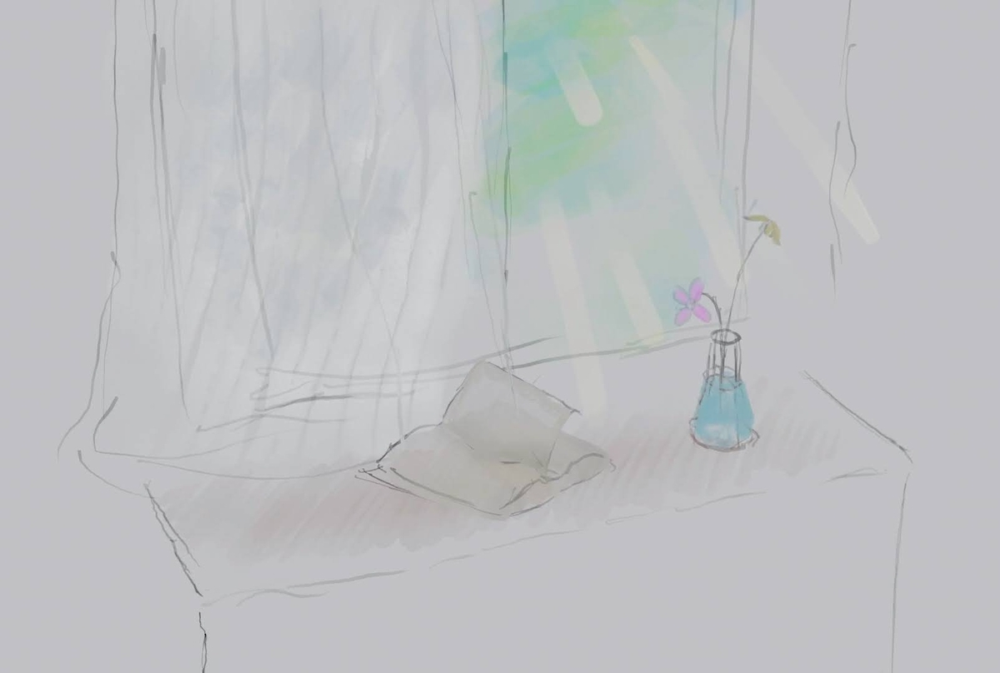
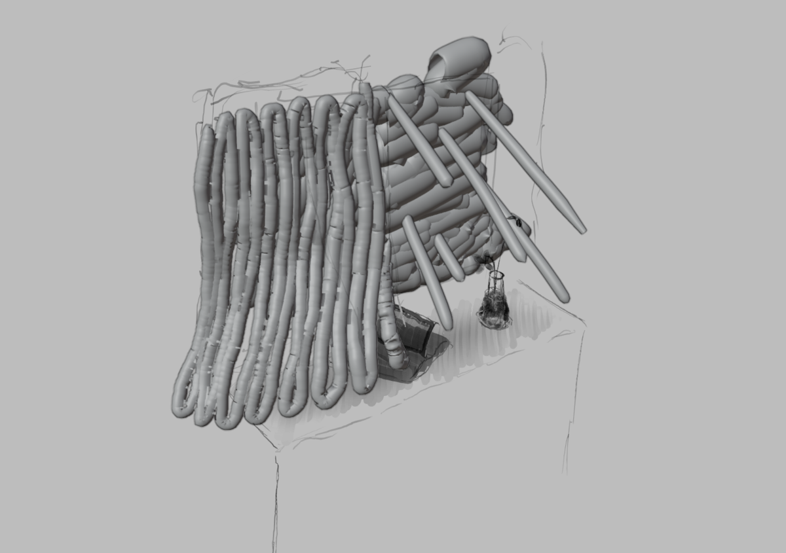
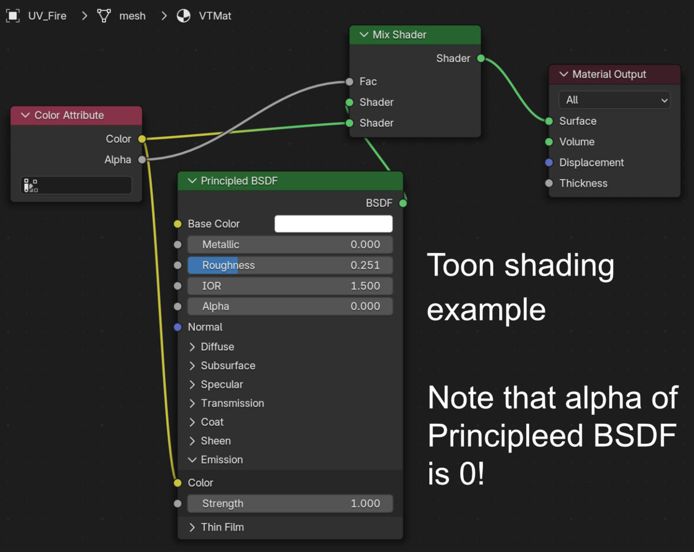

投稿日: 2025/06/26 14:17:33
カテゴリ: グリースペンシル
サムネイル: 
最近Blenderのグリースペンシルでいろいろやっているのだけれど、実はグリースペンシルは背面にある半透明オブジェクトが描画されないなど、アルファブレンディングに関して実は制約が多い。（iPadでグリースペンシルライクに使えるFeatherというアプリも同様で、半透明オブジェクトの後ろに半透明オブジェクトがあると描画されない。）
この制約を打ち破るため、Deep Paintのメッシュ変換機能に着想を得て、頂点カラーおよび太さも反映したメッシュを生成できる機能をアドオンで実現させた。
READMEに記載の通り、Blender 4.3以降のグリースペンシルv3 (GPv3) では、ジオメトリノードが利用できるので、ジオメトリノードを使ってもほぼ同じことができる。が、このアドオンでは4.2 LTSでも動かしたかったので、Pythonで実現している。
そのおかげで、ジオメトリノードでは制約上、頂点カラーを直接更新できなくて擬似的なAttributeになってしまっている部分が、きちんと頂点カラーになっているので、シェーダーノードでもシンプルにColor Attributeが使えるし、GLTFなどでもちゃんとエクスポートができる。
これを使ってどんなことができるかというと、頂点カラーなどを反映させたままメッシュにできるので、半透明の透過オブジェクトとして使いやすくなる。
上記動画の光の表現がまさにそれにあたるのだけれど、以下のようにメッシュ化されているおかげで半透明にできている。

ちなみに当然ながらシェーダノードを自前で書く必要があって、拡張機能のREADMEにも記載の疑似トゥーンシェーダーを使っている。（動画中ではさらにこの先にMix ShaderでEmissiveを混ぜ、光の表現をしていたりする。）

余談として、このシェーダーノードはPrinciple BSDFをAlpha 0で使うというハックを使っていて、これによってTransparent BSDFをMixしたときに起こりやすい、半透明の黒ずみが解消される。
実はこの黒ずみ現象、グリースペンシル自体（グリースペンシルで使われているレンダリング方式）でも起こってしまう。つまり半透明なグリースペンシルが重なると、たまに裏のオブジェクトが描画されないばかりか、どんどん黒ずんでいってしまう。個人的にこれも困っていて、メッシュに変換することで黒ずみを避けれるという一石二鳥にもなっている。（Blender 5.1以降では、グリースペンシル周りのアルファブレンディングを通常のオブジェクトのようにシェーダーノード等で調整できるようにしてほしいなぁ…。）
ちなみにグリースペンシルの太さをそのままにメッシュ化できるようになったことで、Z-Sphereみたいな使い方もできる。
Deep Paintの作例および機能でも同様の技法が使われているが、Deep Paintのメッシュ化は太さが反映されなかったりするので、より使い勝手はZ-Sphereに近い。
個人的にはよりZBrushライクに使うために、変換したメッシュをNomad Sculptにインポートして、ボクセル化して、好きな形にしたあとに（Quad Remesher等かけたあとで）戻すなどしているのだけれど、このメッシュ、頂点カラーなどをGLTF等でエクスポートできる形式になっているので、Sketch Fabなどに作品をアップロードする際のエクスポート機能としても役立つのではないかと思っている。
ちなみに、本当にZ-Sphereみたいな機能が欲しい場合は、Blob Fusionを使うのがおすすめ。こちらはSDF (Signed Distance Field) を使ってメタボールのような機能も足してあって、ファストスカルプトにはとても便利。
ちなみに個人的にちょっと困っているのが、Blender 4.3以降でグリースペンシルv3 (GPv3) になったことで、それ以前とのグリースペンシルの互換性が完全に失われてしまったこと。つまり、4.3以降で作ったグリースペンシルを含むBlenderファイルは、4.2 LTS等の古いバージョンでは全く編集することができない。
これに関しては、開発スレッド等で議論されていたが、GPv2 → GPv3 の自動変換だけ実装し、GPv2は切り捨てるという開発方針に既に決定している様子。つまり逆変換が提供される見込みはない。
今回作ったアドオンなどの機能をうまく応用すれば、標準的なグリースペンシル（テクスチャなどをつけていない、シンプルなレイヤー構造のストローク）であれば逆変換もできるのではないかと思ったりするのだけれど、これについては今後検討していきたい。